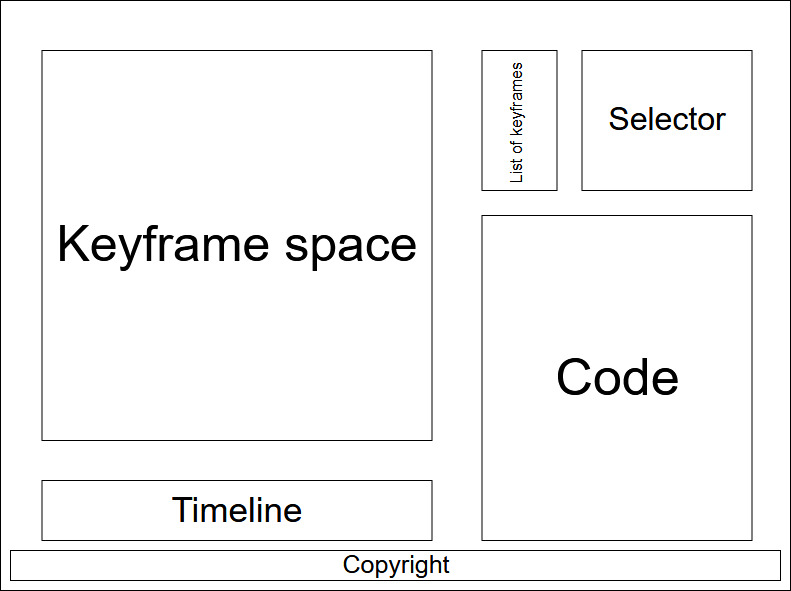

Week 5 progress update
The common method in the beginning of the development of this type of web elements is, first, to make sketches about the interface
that we are going to show and a prototype where the functionality of this is shown.
To create the first approach to the interface we decided to list what elements we believe necessary, we obtained the following:
- Preview space: area where we can see graphically the situation and the final result of the animation.
- Timeline: here we show where the keyframes we have created are located, with respect to time.
- Keyframe list: list with the positions, rotation, scale that we want to interpolate in each keyframe.
- Selector: list with each object of the scene.
- Code display: shows the code of the animation made.
With these elements we can start to create the basic outline of the web page. For this, we use draw.io

Once we have made the first scheme, we place placeholders (non-interactive images) to obtain a first image of the design and its elements.
State of the webpage